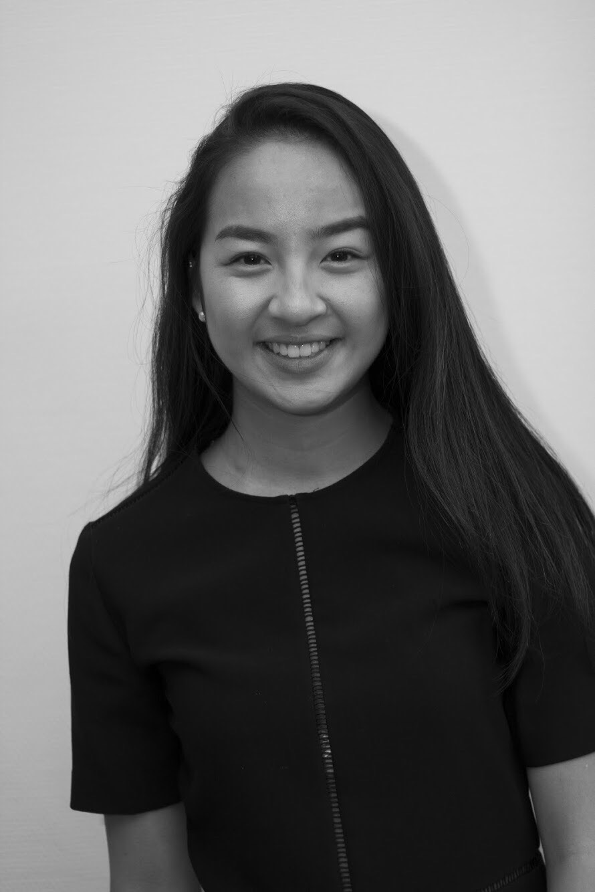
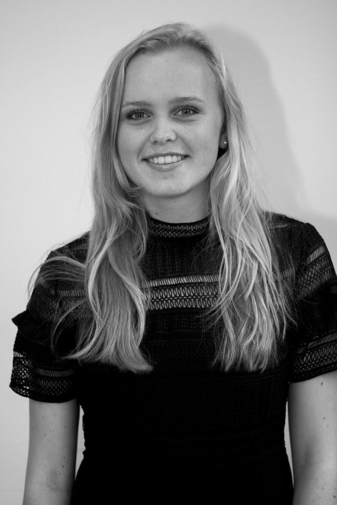
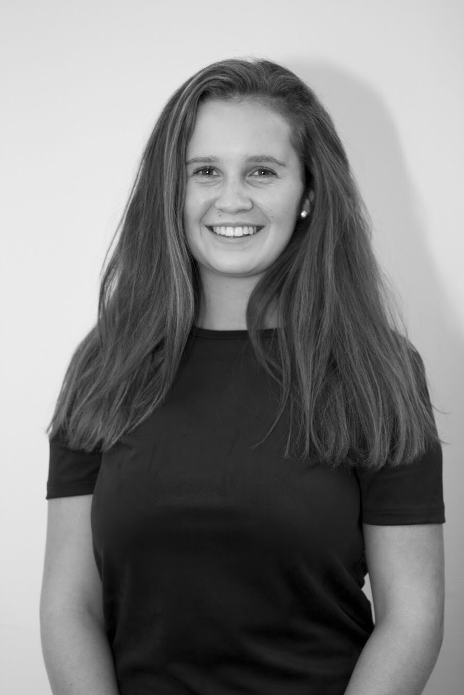

Who are we?
ExComm
We are ExComm!
Hi guys! Nice to meet you, we are the Executive Committee from this year’s (2017) ScalaMUN! We organise this conference full of fun debating! We hope to see you in December!
Rosanne van Wijk
My name is Rosanne van Wijk and I am sixteen years old. I am currently in my fifth year of bilingual VWO. As for what I enjoy most about MUN, I would not even say the debating itself, but rather the atmosphere around the debate and the fact that everyone is genuinely interested in coming up with solutions for major global problems and that everyone is eager to learn. Besides MUN I really enjoy having some q-time with my friends and family, spent in any way possible. Moreover, I like to see new places, go outside and to get creative every once in awhile.

Mailinh Nguyen
My name is Mailinh Nguyen and I am sixteen years old. I am currently in my fifth year of the bilingual VWO at Scala College. Ever since my first year at Scala College, I have taken part in MUN activities; the first three years as admin, then as delegate and this year as one of the Executive Committee members.
I enjoy learning new speaking and writing skills as well as meeting new people with the same interests. MUN conferences help me gain in-depth knowledge and help me get to know other views on certain issues.
Besides MUN I enjoy dancing and music the most. As well as spending time with family and friends!

Isa Witteman
My name is Isa Witteman, I am sixteen years old and am now in my fifth year of Bilingual at Scala College. I started participating in MUN last year and loved doing it so much I decided I wanted to organise a MUN conference myself.
The best thing about MUN is meeting new people all around the globe and having a lot of fun in the committees discussing important issues. My most memorable, and also first, MUN experience was going to Neuss in Germany and participating in the debates as Poland.
Something I like doing besides organising this years ScalaMUN is playing fieldhockey and meeting up with my friends. I also enjoy listening to music and watching Netlfix!

Brittany Lionarons
Hi! My name is Brittany Lionarons. I'm a sixteen years old girl attending Bilingual Education at Scala College in Alphen aan den Rijn. I have already attended several conferences as a delegation myself and this year I'll be organising ScalaMUN together with four other pupils. The best thing about MUN is meeting new people from all over the world with many different backgrounds and trying to come up with solutions for global issues with each other. The best thing outside MUN is playing fieldhockey. If I'm not at school, you can find me on the fieldhockeypitch! See you in December!

Eva Leliveld
Hello! My name is Eva, I am sixteen years old. The best thing about MUN for me would have to be the clothing. Just kidding, but really though. I really enjoy the vibes at the conferences and the preparations. I love meeting new people here and having fun in the committees. You learn a lot during the debates which would have to be great as well, of course. I was in the committees of ScalaMUN last year and I enjoyed it so much so this year I decided I wanted to create something great with our team myself. Outside MUN, I am very passionate about dancing and therefore I spend a lot of time at the dance school. I love to travel and to do cool things with my friends. See you soon!